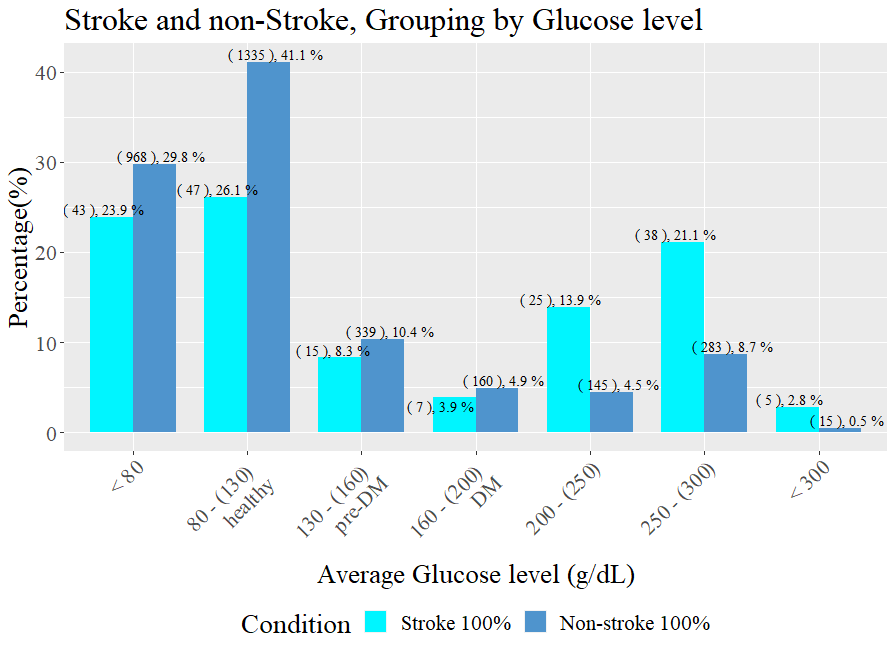

Chapter 6: “中風組內分佈”與”非中風組內分佈”¶
在這個部份，我們把資料分成中風者與非中風者，然後計算不同變數的條件機率
A. 年齡¶
下圖中，淡藍色Bar 代表的是 \(P(\text{Age Group}~|~\text{Stroke})\)
深藍色Bar 代表的是 \(P(\text{Age Group}~|~\text{Non-Stroke})\)
文字註解中，括號代表的是實際的人數

非中風族群的年齡分佈就跟這組資料的分佈差不多
在中風族群中，可以看到過了50歲，人數就急遽攀升，直到70-79歲達到高峰。表示中風者裏面都是年歲比較大的人
B. 血糖¶
相較於列聯表的分析，我們在這裡把血糖做比較細的分類，分成7群
{kind=link}
上圖中，淡藍色Bar 代表的是 \(P(\text{Glucose Group}~|~\text{Stroke})\)
深藍色Bar 代表的是 \(P(\text{Glucose Group}~|~\text{Non-Stroke})\)
pre-DM:糖尿病前期, DM: 糖尿病
首先，非中風者的分佈是雙峰，中風者的分佈也是雙峰。加總起來，如之前看到的，也是雙峰。
非中風族群裏面，左邊的高峰是正常血糖的人，佔了七成(29.8%+41.1%)。右邊的峰，就相對的矮多了，大約是15%(4.5%+8.7%)。
在中風族群中，左邊的高峰是正常血糖的人，佔了大約五成(23.9%+26.1%)。右邊的高峰，大約是35%。表示中風患者，高血糖的比例的確是提升了。
{kind=link}
由於做了更細的分類，我們再一次的呈現反向的條件機率
上圖中，橘色Bar 代表的是 \(P(\text{Stroke}~|~\text{Glucose Group})\)
棕色Bar 代表的是 \(P(\text{Non-Stroke}~|~\text{Glucose Group})\)
血糖80-160的族群中，中風的比例差不多，大約都是4%。血糖過了兩百，中風的比例就開始提升，可以看到血糖超高族群，中風與非中風患者的比例是1:3
C. BMI¶
相較於列聯表的分析，我們在這裡把BMI做比較細的分類，分成6群

上圖中，淡藍色Bar 代表的是 \(P(\text{BMI Group}~|~\text{Stroke})\)
深藍色Bar 代表的是 \(P(\text{BMI Group}~|~\text{Non-Stroke})\)
中風族群裡，正常BMI跟微胖的人大約佔了27%，27\(<\)BMI\(<\)35 的人大約佔了50%
非中風族群裡，正常BMI跟微胖的人大約佔了34%，27\(<\)BMI\(<\)35 的人大約佔了42%
中風族群裡BMI>35的比例與非中風族群裡>35的比例是差不多的，都是21%

由於做了更細的分類，我們再一次的呈現反向的條件機率
上圖中，橘色Bar 代表的是 \(P(\text{Stroke}~|~\text{BMI Group})\)
棕色Bar 代表的是 \(P(\text{Non-Stroke}~|~\text{BMI Group})\)
BMI過了27之後，中風的比例有些微提升，但在非常肥胖的組別(30-35,35-)並沒有特別顯著的提升